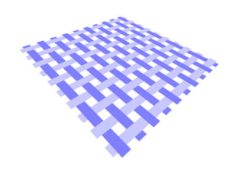
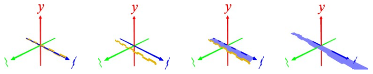
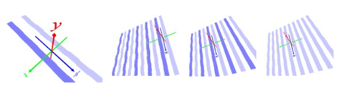
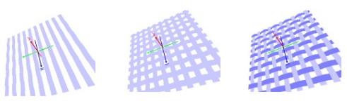

[1] くねくねした紐をつくる
正弦波の振幅を制限してくねくねした紐をつくる。
p curve np.linspace(-1,1,100) T np.clip(np.sin(T*np.pi*5),-0.025,0.025) [0]*len(T)
p t 0 0 0.25 2 ･･･ z 方向に押し出す
surface ･･･ メッシュ化する
s 2.5 1 1 ･･･ x 方向に伸ばす

[2] 逆相のくねくね紐をつくる
t 0 0 0.125 ･･･ z 方向に 0.125(くねくね紐の幅の半分)移動
r 180 0 0 2 ･･･ x 軸周りに 180° 回転したコピーを作成
t 0 0 1 5 ･･･ 逆相の紐を 5 組に増やす
centering ･･･ センタリグ
c 200 200 255 ･･･ 薄い青にペイント
save tmp.ply ･･･ 10 本の紐(逆相 5 組, 横糸のみの半分布)をセーブ

[3] 横糸と縦糸を組み合わせて布にする
l tmp.ply ･･･ 横糸のみの半分布をロード
r 0 90 0 ･･･ y 軸周りに 90°回転。縦糸にする
c 128 128 255 ･･･ 濃い青にペイント
merge ･･･ 横糸とマージ
s 1 1/100 1 ･･･ y 方向を 1/100(テキトー)につぶす
